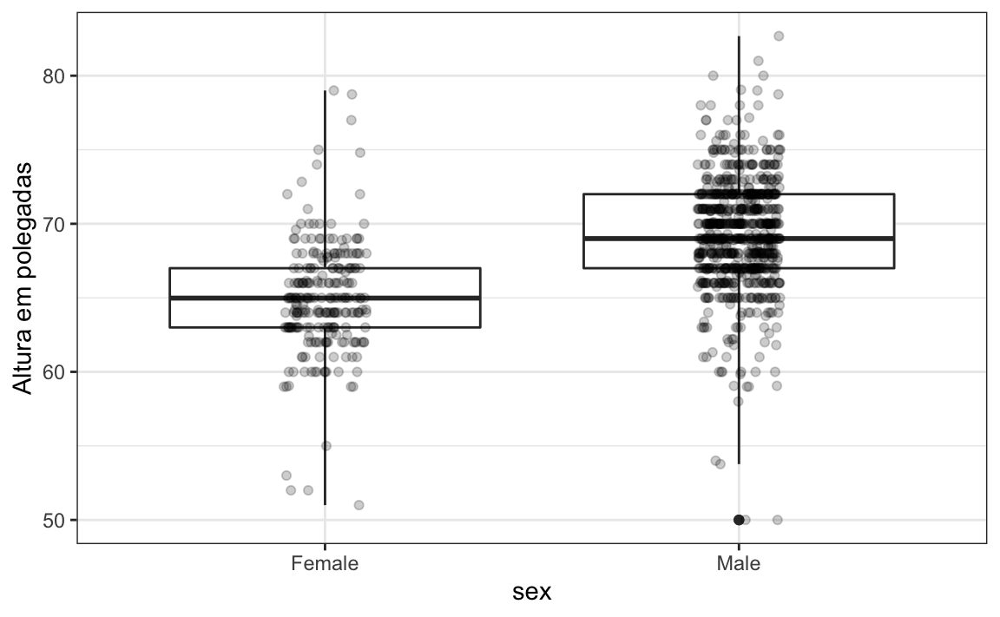
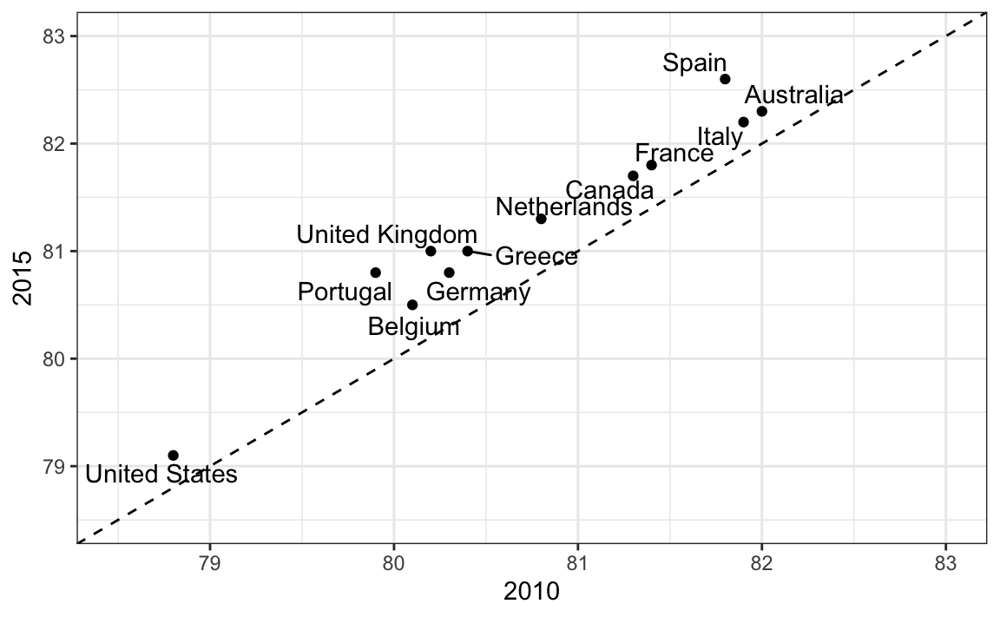

Capítulo 10 Princípios de visualização de dados
Já definimos algumas regras a serem seguidas ao criar gráficos para nossos exemplos. Aqui, nosso objetivo é oferecer alguns princípios gerais que podemos usar como um guia para uma visualização eficaz dos dados. Grande parte desta seção é baseada em uma palestra de Karl Broman32 intitulada “Criando figuras e tabelas eficazes”33 e inclui algumas das figuras que foram criadas com o código que Karl disponibiliza em seu repositório GitHub34, bem como as notas da classe " Introdução à visualização de dados ", de Peter Aldhous35. Seguindo a abordagem de Karl, mostramos alguns exemplos de estilos de gráfico a serem evitados, explicamos como melhorá-los e depois os usamos como motivação para uma lista de princípios. Além disso, comparamos e contrastamos gráficos que seguem esses princípios com outros que os ignoram.
Os princípios são baseados principalmente em pesquisas relacionadas à forma como os seres humanos detectam padrões e fazem comparações visuais. As abordagens preferidas são as que melhor se adaptam à maneira como nossos cérebros processam as informações visuais. Ao escolher as ferramentas de visualização, é importante ter em mente nosso objetivo. Podemos comparar um número suficientemente pequeno de números que podem ser distinguidos, descrevendo distribuições de dados categóricos ou valores numéricos, comparando os dados de dois grupos ou descrevendo a relação entre duas variáveis e isso afeta a apresentação que escolheremos. Como observação final, queremos enfatizar que é importante para os cientistas de dados adaptar e otimizar gráficos para o público. Por exemplo, um gráfico exploratório feito para nós será diferente de uma tabela destinada a comunicar uma descoberta a um público em geral.
Vamos usar estes pacotes:
10.1 Como codificar dados usando pistas visuais
Começamos descrevendo alguns princípios para codificar dados. Existem várias abordagens à nossa disposição, incluindo posição, comprimento, ângulos, área, brilho e tom da cor.
Para ilustrar como algumas dessas estratégias se comparam, suponha que desejamos relatar os resultados de duas pesquisas hipotéticas, realizadas em 2000 e depois em 2015, em relação à preferência do navegador. Para cada ano, estamos simplesmente comparando cinco quantidades: as cinco porcentagens. Uma representação gráfica de porcentagens amplamente usada e popularizada pelo Microsoft Excel é o gráfico de pizza:

Aqui estamos representando quantidades com áreas e ângulos, pois o ângulo e a área de cada seção do gráfico são proporcionais à quantidade que o setor representa. Isso acaba sendo uma opção abaixo do ideal, pois, como mostram os estudos perceptivos, os seres humanos não são bons em quantificar com precisão ângulos e são ainda piores quando a área é o único sinal visual disponível. O gráfico em anel é um exemplo de gráfico que usa apenas a área:

Para ver como é difícil quantificar ângulos e área, lembre-se de que as classificações e todas as porcentagens nos gráficos acima foram alteradas de 2000 para 2015. Você pode determinar as porcentagens reais e classificar a popularidade dos navegadores? Você pode ver como as porcentagens mudaram de 2000 para 2015? Não é fácil diferenciá-lo do gráfico. De fato, a função pie da página de ajuda de R observa que:
Os gráficos de pizza são uma maneira muito ruim de exibir informações. O olho é bom em julgar medições lineares e ruim em julgar áreas relativas. Um diagrama de barras ou pontos é uma maneira preferível de exibir esse tipo de dados.
Nesse caso, simplesmente exibir os números não é apenas mais claro, mas também reduziria os custos de impressão se você imprimir uma cópia em papel:
| Browser | 2000 | 2015 |
|---|---|---|
| Opera | 3 | 2 |
| Safari | 21 | 22 |
| Firefox | 23 | 21 |
| Chrome | 26 | 29 |
| IE | 28 | 27 |
A maneira preferida de representar graficamente essas quantidades é usar comprimento e posição como pistas visuais, uma vez que os humanos são muito melhores em julgar medições lineares. O gráfico de barras usa essa abordagem usando barras de comprimento proporcional às quantias de interesse. Ao adicionar linhas horizontais aos valores escolhidos estrategicamente, neste caso, a cada múltiplo de 10, aliviaremos a carga visual da quantificação através da posição da parte superior das barras. Compare e compare as informações que podemos extrair dos dois pares de gráficos a seguir.
Observe como é fácil ver as diferenças no gráfico de barras. De fato, agora podemos determinar as porcentagens reais seguindo uma linha horizontal para o eixo x.
Se, por algum motivo, você precisar criar um gráfico circular, rotule cada seção do círculo com sua respectiva porcentagem para que o público não precise inferi-las a partir dos ângulos ou da área:

Em geral, ao exibir quantidades, posição e comprimento sobre ângulos e/ ou área são os preferidos. O brilho e a cor são ainda mais difíceis de quantificar do que os ângulos. Mas, como veremos mais adiante, às vezes são úteis quando mais de duas dimensões devem ser exibidas ao mesmo tempo.
10.2 Saiba quando incluir 0
Ao usar gráficos de barras, é errado não iniciar as barras em 0. Isso ocorre porque, ao usar um gráfico de barras, estamos sugerindo que o comprimento é proporcional às quantidades mostradas. Ao evitar 0, você pode fazer com que diferenças relativamente pequenas pareçam muito maiores do que realmente são. Essa abordagem é frequentemente usada por políticos ou pela mídia que tentam exagerar a diferença. Abaixo está um exemplo ilustrativo usado por Peter Aldhous nesta palestra: http://paldhous.github.io/ucb/2016/dataviz/week2.htmlfont^^ http://paldhous.github.io/ucb/2016/ dataviz/ week2.html].

(Fonte: Fox News, via Media Matters36.)
No gráfico acima, as detenções parecem ter triplicado quando, de fato, elas aumentaram apenas aproximadamente 16%. Iniciar o gráfico em 0 ilustra isso claramente:

Abaixo, vemos outro exemplo, que é descrito em detalhes em um artigo do blog “Flowing Data”:
 (Fonte: Fox News, através da Flowing Data37)
(Fonte: Fox News, através da Flowing Data37)
Este gráfico faz um aumento de 13% parecer cinco vezes maior. Aqui está o gráfico apropriado:
Finalmente, aqui está um exemplo extremo que faz uma diferença muito pequena de menos de 2% parecer 10 a 100 vezes maior:

(Fonte: Televisão venezuelana via Pakistan Today38 e Diego Mariano)
Aqui está o gráfico apropriado:
Ao usar a posição em vez do comprimento, não é necessário incluir 0. Esse é particularmente o caso quando queremos comparar as diferenças entre os grupos em relação à variabilidade dentro de um grupo. Aqui está um exemplo ilustrativo que mostra a expectativa média de vida de cada país estratificado por continente em 2012:

Observe que, no gráfico à esquerda, que inclui 0, o espaço entre 0 e 43 não adiciona informações e dificulta a comparação da variabilidade entre e dentro do grupo.
10.3 Não distorça quantidades
Durante o discurso do Estado da União de Barack Obama em 2011, o gráfico a seguir foi usado para comparar o PIB dos EUA. EUA com o PIB de quatro nações concorrentes:
 (Fonte: endereço do estado da união de 201139)
(Fonte: endereço do estado da união de 201139)
Se julgarmos pela área dos círculos, os Estados Unidos parecem ter uma economia cinco vezes maior que a da China e mais de 30 vezes maior que a da França. No entanto, se olharmos para os números atuais, veremos que esse não é o caso. As proporções são 2,6 e 5,8 vezes superiores às da China e da França, respectivamente. A razão para essa distorção é que o raio do círculo, em vez da área, se tornou proporcional à quantidade, o que implica que a razão entre as áreas é quadrada: 2,6 se torna 6,5 e 5,8 se torna 34,1. Aqui está uma comparação dos círculos que obtemos se tornarmos o valor proporcional ao raio e à área:

Não é surpresa que, por padrão, ggplot2 use a área em vez do raio. No entanto, nesse caso, realmente não devemos usar a área, pois podemos usar a posição e o comprimento:
10.4 Classificar categorias por valor significativo
Quando um dos eixos é usado para exibir categorias, como é feito nos gráficos de barras, o comportamento padrão de ggplot2 é classificar as categorias em ordem alfabética quando definidas por cadeias de caracteres. Se eles são definidos por fatores, são ordenados de acordo com os níveis dos fatores. Raramente queremos usar a ordem alfabética. Em vez disso, devemos solicitar uma quantidade significativa. Em todos os casos anteriores, os gráficos de barras foram ordenados de acordo com os valores mostrados. A exceção foram gráficos de barras comparando navegadores. Nesse caso, mantivemos a ordem igual em todos os gráficos de barras para facilitar a comparação. Especificamente, em vez de solicitar navegadores separadamente nos dois anos, solicitamos os dois anos pelo valor médio de 2000 e 2015.
Anteriormente, aprendemos a usar a função reorder, o que nos ajuda a alcançar esse objetivo. Para avaliar como a ordem correta pode ajudar a transmitir uma mensagem, suponha que desejamos criar um gráfico para comparar a taxa de homicídios em todos os estados dos EUA.estamos particularmente interessados nos estados mais perigosos e mais seguros. Lembre-se da diferença quando solicitamos alfabeticamente, a ação padrão, versus quando solicitamos pela taxa real:

Podemos fazer o segundo gráfico assim:
data(murders)
murders %>% mutate(murder_rate = total/ population * 100000) %>%
mutate(state = reorder(state, murder_rate)) %>%
ggplot(aes(state, murder_rate)) +
geom_bar(stat="identity") +
coord_flip() +
theme(axis.text.y = element_text(size = 6)) +
xlab("")A função reorder também nos permite reordenar grupos. Anteriormente, vimos um exemplo relacionado à distribuição de renda entre regiões. Aqui vemos as duas versões representadas graficamente uma contra a outra:

O primeiro gráfico classifica as regiões em ordem alfabética, enquanto o segundo gráfico as classifica pela mediana do grupo.
10.5 Mostrar os dados
Nosso foco foi exibir quantidades únicas em todas as categorias. Agora, voltamos nossa atenção para a visualização de dados, com foco na comparação de grupos.
Para motivar nosso primeiro princípio, “mostrar os dados”, retornamos ao nosso exemplo artificial de descrição de alturas para ET, um alienígena. Desta vez, suponha que o ET esteja interessado na diferença de altura entre homens e mulheres. Um gráfico comumente usado para comparações de grupo e popularizado por software como o Microsoft Excel, é o dynamite plot, que mostra os erros médios e padrão (os erros padrão são definidos em um capítulo posterior, mas não os confundem com o desvio padrão do dados). O gráfico fica assim:

A média de cada grupo é representada pelo topo de cada barra e as antenas se estendem da média para a média mais dois erros padrão. Se tudo o que o ET obtiver for esse gráfico, você terá poucas informações sobre o que esperar se encontrar um grupo de homens e mulheres. As barras vão para 0: isso significa que existem seres humanos pequenos com menos de um pé de altura? Todos os homens são mais altos que as mulheres mais altas? Existe uma variedade de alturas? O ET é incapaz de responder a essas perguntas, pois mal lhe fornecemos informações sobre a distribuição da altura.
Isso nos leva ao nosso primeiro princípio: exibir os dados. Esse código ggplot2 simples já gera um gráfico mais informativo que o gráfico de barras, exibindo todos os pontos de dados:

O gráfico acima nos dá uma idéia do alcance dos dados. No entanto, este gráfico também possui limitações, pois não podemos realmente ver toda a soma FALSE, FALSE, FALSE, FALSE, FALSE, TRUE, TRUE, TRUE, TRUE, FALSE, FALSE, FALSE, FALSE, FALSE, FALSE, FALSE, FALSE, TRUE, TRUE, FALSE, FALSE, FALSE, FALSE, FALSE, FALSE, FALSE, FALSE, FALSE, TRUE, FALSE, FALSE, FALSE, TRUE, TRUE, TRUE, FALSE, FALSE, TRUE, FALSE, TRUE, FALSE, FALSE, TRUE, FALSE, FALSE, FALSE, FALSE, FALSE, FALSE, FALSE, FALSE, FALSE, FALSE, FALSE, TRUE, FALSE, FALSE, FALSE, FALSE, FALSE, FALSE, FALSE, FALSE, FALSE, FALSE, FALSE, TRUE, FALSE, FALSE, FALSE, FALSE, FALSE, FALSE, FALSE, TRUE, FALSE, FALSE, TRUE, TRUE, FALSE, FALSE, FALSE, FALSE, TRUE, TRUE, FALSE, FALSE, FALSE, TRUE, FALSE, TRUE, FALSE, TRUE, TRUE, FALSE, FALSE, TRUE, TRUE, FALSE, FALSE, TRUE, FALSE, TRUE, TRUE, FALSE, TRUE, TRUE, FALSE, FALSE, TRUE, FALSE, FALSE, TRUE, FALSE, FALSE, FALSE, FALSE, FALSE, FALSE, FALSE, FALSE, TRUE, TRUE, FALSE, FALSE, TRUE, TRUE, TRUE, FALSE, TRUE, TRUE, TRUE, FALSE, TRUE, FALSE, TRUE, FALSE, FALSE, FALSE, TRUE, FALSE, TRUE, TRUE, FALSE, FALSE, FALSE, FALSE, TRUE, FALSE, FALSE, TRUE, FALSE, TRUE, FALSE, FALSE, FALSE, FALSE, TRUE, TRUE, TRUE, TRUE, TRUE, TRUE, TRUE, FALSE, TRUE, TRUE, FALSE, FALSE, TRUE, TRUE, FALSE, FALSE, FALSE, FALSE, FALSE, TRUE, FALSE, FALSE, FALSE, FALSE, TRUE, FALSE, FALSE, FALSE, TRUE, TRUE, TRUE, FALSE, TRUE, FALSE, FALSE, TRUE, TRUE, TRUE, TRUE, FALSE, TRUE, FALSE, FALSE, TRUE, FALSE, FALSE, TRUE, FALSE, FALSE, FALSE, TRUE, FALSE, TRUE, FALSE, FALSE, FALSE, FALSE, TRUE, TRUE, FALSE, TRUE, FALSE, FALSE, FALSE, FALSE, FALSE, FALSE, TRUE, TRUE, TRUE, FALSE, FALSE, FALSE, FALSE, FALSE, FALSE, FALSE, FALSE, FALSE, TRUE, FALSE, FALSE, TRUE, FALSE, FALSE, FALSE, FALSE, FALSE, FALSE, FALSE, FALSE, TRUE, FALSE, FALSE, FALSE, FALSE, FALSE, FALSE, TRUE, FALSE, TRUE, TRUE, TRUE, TRUE, FALSE, FALSE, TRUE, FALSE, FALSE, FALSE, FALSE, FALSE, FALSE, FALSE, FALSE, FALSE, FALSE, FALSE, FALSE, FALSE, FALSE, FALSE, FALSE, FALSE, FALSE, FALSE, FALSE, FALSE, FALSE, FALSE, FALSE, FALSE, TRUE, FALSE, FALSE, FALSE, FALSE, TRUE, TRUE, TRUE, FALSE, FALSE, FALSE, FALSE, FALSE, FALSE, TRUE, FALSE, FALSE, TRUE, FALSE, FALSE, FALSE, TRUE, FALSE, FALSE, FALSE, TRUE, FALSE, FALSE, FALSE, FALSE, FALSE, TRUE, FALSE, FALSE, FALSE, FALSE, TRUE, FALSE, TRUE, FALSE, FALSE, FALSE, FALSE, TRUE, FALSE, FALSE, FALSE, FALSE, FALSE, FALSE, TRUE, FALSE, FALSE, FALSE, FALSE, FALSE, FALSE, FALSE, FALSE, TRUE, FALSE, FALSE, FALSE, FALSE, FALSE, FALSE, FALSE, FALSE, FALSE, FALSE, TRUE, FALSE, FALSE, FALSE, FALSE, TRUE, FALSE, FALSE, FALSE, TRUE, FALSE, FALSE, FALSE, FALSE, FALSE, FALSE, FALSE, FALSE, FALSE, FALSE, FALSE, FALSE, FALSE, FALSE, FALSE, FALSE, FALSE, TRUE, TRUE, FALSE, FALSE, FALSE, FALSE, FALSE, TRUE, FALSE, FALSE, FALSE, FALSE, FALSE, FALSE, FALSE, FALSE, TRUE, FALSE, FALSE, FALSE, FALSE, FALSE, FALSE, FALSE, TRUE, FALSE, FALSE, FALSE, FALSE, FALSE, FALSE, FALSE, FALSE, FALSE, FALSE, FALSE, TRUE, FALSE, FALSE, FALSE, FALSE, FALSE, FALSE, FALSE, FALSE, FALSE, FALSE, FALSE, FALSE, FALSE, FALSE, FALSE, FALSE, TRUE, FALSE, FALSE, TRUE, FALSE, FALSE, FALSE, FALSE, FALSE, FALSE, FALSE, FALSE, FALSE, FALSE, TRUE, FALSE, FALSE, FALSE, FALSE, TRUE, FALSE, FALSE, FALSE, FALSE, FALSE, FALSE, FALSE, FALSE, FALSE, TRUE, FALSE, FALSE, FALSE, FALSE, FALSE, FALSE, FALSE, TRUE, FALSE, FALSE, FALSE, FALSE, TRUE, TRUE, FALSE, FALSE, FALSE, FALSE, FALSE, FALSE, FALSE, FALSE, FALSE, FALSE, FALSE, FALSE, TRUE, FALSE, FALSE, FALSE, FALSE, FALSE, FALSE, FALSE, FALSE, FALSE, FALSE, FALSE, FALSE, FALSE, FALSE, FALSE, FALSE, TRUE, FALSE, TRUE, FALSE, FALSE, FALSE, FALSE, FALSE, FALSE, FALSE, FALSE, FALSE, FALSE, FALSE, TRUE, FALSE, FALSE, TRUE, FALSE, FALSE, FALSE, TRUE, FALSE, FALSE, TRUE, FALSE, TRUE, TRUE, FALSE, FALSE, FALSE, FALSE, FALSE, FALSE, FALSE, FALSE, FALSE, FALSE, FALSE, FALSE, FALSE, FALSE, FALSE, FALSE, TRUE, TRUE, FALSE, FALSE, FALSE, TRUE, FALSE, FALSE, FALSE, TRUE, FALSE, FALSE, FALSE, TRUE, FALSE, TRUE, FALSE, FALSE, FALSE, FALSE, FALSE, FALSE, FALSE, FALSE, FALSE, TRUE, TRUE, TRUE, FALSE, FALSE, FALSE, FALSE, FALSE, FALSE, FALSE, FALSE, FALSE, FALSE, FALSE, FALSE, FALSE, FALSE, FALSE, FALSE, FALSE, FALSE, FALSE, TRUE, FALSE, FALSE, FALSE, TRUE, FALSE, FALSE, FALSE, FALSE, FALSE, TRUE, FALSE, FALSE, FALSE, FALSE, FALSE, FALSE, FALSE, FALSE, FALSE, TRUE, FALSE, FALSE, FALSE, FALSE, FALSE, FALSE, TRUE, FALSE, FALSE, FALSE, FALSE, FALSE, FALSE, FALSE, FALSE, FALSE, FALSE, TRUE, FALSE, FALSE, FALSE, FALSE, TRUE, FALSE, FALSE, FALSE, FALSE, FALSE, FALSE, FALSE, FALSE, FALSE, FALSE, FALSE, FALSE, TRUE, FALSE, FALSE, FALSE, FALSE, FALSE, FALSE, FALSE, FALSE, FALSE, FALSE, TRUE, FALSE, FALSE, FALSE, FALSE, FALSE, FALSE, FALSE, FALSE, FALSE, FALSE, FALSE, FALSE, FALSE, FALSE, FALSE, FALSE, FALSE, FALSE, FALSE, FALSE, FALSE, FALSE, FALSE, FALSE, FALSE, FALSE, FALSE, FALSE, FALSE, FALSE, FALSE, FALSE, FALSE, FALSE, FALSE, TRUE, FALSE, FALSE, FALSE, FALSE, FALSE, FALSE, FALSE, FALSE, FALSE, FALSE, FALSE, FALSE, FALSE, FALSE, FALSE, TRUE, FALSE, FALSE, FALSE, FALSE, FALSE, FALSE, FALSE, FALSE, FALSE, FALSE, FALSE, FALSE, FALSE, FALSE, FALSE, FALSE, FALSE, TRUE, FALSE, FALSE, FALSE, FALSE, FALSE, FALSE, TRUE, TRUE, FALSE, TRUE, FALSE, FALSE, FALSE, FALSE, TRUE, TRUE, TRUE, TRUE, TRUE, TRUE, FALSE, FALSE, TRUE, TRUE, TRUE, FALSE, TRUE, TRUE, TRUE, FALSE, TRUE, TRUE, FALSE, FALSE, FALSE, TRUE, TRUE, TRUE, TRUE, TRUE, TRUE, TRUE, TRUE, TRUE, FALSE, TRUE, TRUE, TRUE, TRUE, FALSE, FALSE, FALSE, FALSE, FALSE, FALSE, TRUE, FALSE, TRUE, FALSE, FALSE, FALSE, TRUE, FALSE, TRUE, FALSE, FALSE, FALSE, TRUE, TRUE, FALSE, FALSE, FALSE, TRUE, FALSE, TRUE, FALSE, TRUE, FALSE, FALSE, FALSE, FALSE, TRUE, FALSE, FALSE, TRUE, TRUE, FALSE, FALSE, TRUE, TRUE, TRUE, FALSE, TRUE, FALSE, TRUE, FALSE, TRUE, FALSE, FALSE, FALSE, TRUE, TRUE, TRUE, FALSE, FALSE, FALSE, TRUE, FALSE, FALSE, FALSE, FALSE, TRUE, FALSE, FALSE, TRUE, TRUE, FALSE, FALSE, TRUE, FALSE, FALSE, TRUE, FALSE, FALSE, FALSE, FALSE, FALSE, FALSE, TRUE, TRUE, TRUE, FALSE, FALSE, FALSE, FALSE, TRUE, FALSE, TRUE, FALSE, FALSE, FALSE, FALSE, TRUE, FALSE, TRUE, FALSE, TRUE, TRUE, FALSE, FALSE, FALSE, FALSE, FALSE, TRUE, FALSE, FALSE, FALSE, FALSE, FALSE, FALSE, TRUE, TRUE, TRUE, FALSE, FALSE, FALSE, FALSE, FALSE, TRUE, FALSE, FALSE, FALSE, FALSE, FALSE, FALSE, FALSE, FALSE, FALSE, FALSE, FALSE, FALSE, FALSE, FALSE, FALSE, TRUE, FALSE, FALSE, FALSE, FALSE, FALSE, FALSE, TRUE, TRUE, FALSE, FALSE, FALSE, FALSE, TRUE, FALSE, FALSE, FALSE, FALSE, FALSE, FALSE, FALSE, FALSE, FALSE, FALSE, FALSE, FALSE, FALSE, FALSE, FALSE, FALSE, FALSE, FALSE, FALSE, FALSE, FALSE, FALSE, FALSE, FALSE, FALSE, FALSE, FALSE, FALSE, FALSE, FALSE, FALSE, FALSE, FALSE, FALSE, FALSE, FALSE, FALSE, FALSE, FALSE, FALSE, FALSE, TRUE, TRUE, TRUE, FALSE, FALSE, FALSE, TRUE, FALSE, FALSE, FALSE, FALSE, FALSE, FALSE, FALSE, FALSE, FALSE, FALSE, TRUE, FALSE, FALSE, TRUE, FALSE, FALSE, TRUE, FALSE, FALSE, FALSE, FALSE, TRUE, FALSE, FALSE, FALSE, FALSE, FALSE, FALSE, TRUE, FALSE, FALSE, FALSE, FALSE, FALSE, TRUE, FALSE, FALSE, TRUE, FALSE, FALSE, FALSE, FALSE, FALSE, FALSE, FALSE, FALSE, FALSE, FALSE, FALSE, FALSE, FALSE, FALSE, FALSE, FALSE, FALSE, FALSE, FALSE, FALSE, TRUE, FALSE, FALSE, FALSE, FALSE y 812pontos plotados para mulheres e homens, respectivamente, e muitos pontos são plotados um sobre o outro. Como descrevemos anteriormente, visualizar a distribuição é muito mais informativo. Porém, antes de fazer isso, apontamos duas maneiras de melhorar um gráfico que mostra todos os pontos.
O primeiro é adicionar jitter, que adiciona um pequeno deslocamento aleatório a cada ponto. Nesse caso, adicionar horizontal jitter não altera a interpretação, pois as alturas dos pontos não mudam, mas minimizamos o número de pontos que se sobrepõem e, portanto, temos uma melhor ideia visual de como os dados são distribuídos. Uma segunda melhoria vem do uso de alpha blending, que torna os pontos um pouco transparentes. Quanto mais pontos se sobrepuserem, mais escuro será o gráfico, o que também nos ajudará a ter uma idéia de como os pontos são distribuídos. Aqui está o mesmo gráfico com jitter_e_alpha blending:
Agora começamos a sentir que, em média, os machos são mais altos que as fêmeas. Também observamos faixas pontilhadas horizontais escuras, o que mostra que muitos alunos indicam valores arredondados para o número inteiro mais próximo.
10.6 Como facilitar comparações
10.6.1 Use eixos comuns
Como existem muitos pontos, é mais eficaz mostrar distribuições do que pontos individuais. Portanto, mostramos histogramas para cada grupo:

No entanto, olhando para o gráfico acima, não é imediatamente óbvio que os homens são, em média, mais altos que as mulheres. Temos que observar com atenção para perceber que o eixo x tem uma faixa de valores mais alta no histograma masculino. Um princípio importante aqui é manter os eixos iguais ao comparar dados em dois gráficos. A seguir, vemos como a comparação se torna mais fácil:

10.6.2 Alinhe os gráficos verticalmente para ver alterações horizontais e horizontalmente para ver alterações verticais
Nesses histogramas, o sinal visual relacionado a reduções ou aumentos de altura são alterações à esquerda ou à direita, respectivamente: alterações horizontais. O alinhamento vertical dos gráficos nos ajuda a ver essa alteração quando os eixos são fixos:

heights %>%
ggplot(aes(height, ..density..)) +
geom_histogram(binwidth = 1, color="black") +
facet_grid(sex~.)O gráfico acima facilita a observação de que os machos são, em média, mais altos.
Se quisermos obter o resumo compacto que os boxplots oferecem, precisamos alinhá-los horizontalmente, pois, por padrão, os boxplots se movem para cima e para baixo com base nas mudanças de altura. Seguindo o princípio “mostrar os dados”, sobrepusemos todos os pontos de dados:

heights %>%
ggplot(aes(sex, height)) +
geom_boxplot(coef=3) +
geom_jitter(width = 0.1, alpha = 0.2) +
ylab("Height in inches")Agora compare e contraste estes três gráficos, com base exatamente nos mesmos dados:
Observe quanto aprendemos mais nos dois gráficos à direita. Os gráficos de barras são úteis para exibir um número, mas não são muito úteis quando queremos descrever distribuições.
10.6.3 Considere transformações
Incentivamos o uso de transformação logarítmica nos casos em que as alterações são multiplicativas. O tamanho da população foi um exemplo em que descobrimos que uma transformação logarítmica produziu uma transformação mais informativa.
A combinação de um gráfico de barras escolhido incorretamente e a não utilização de uma transformação logarítmica, quando necessário, podem ser particularmente distorcidas. Como exemplo, considere este gráfico de barras mostrando os tamanhos médios da população para cada continente em 2015:
Observando o gráfico acima, conclui-se que os países asiáticos são muito mais populosos do que os de outros continentes. Seguindo o princípio “mostrar os dados”, notamos rapidamente que isso se deve a dois países muito grandes, que assumimos serem a Índia e a China:
Usar uma transformação logarítmica aqui produz um gráfico muito mais informativo. Comparamos o gráfico de barras original com um gráfico de caixa usando a transformação de escala logarítmica para o eixo y:
Com o novo gráfico, percebemos que os países africanos realmente têm uma população mediana maior que a Ásia.
Outras transformações a considerar são a transformação logística ( logit), que é útil para ver melhor as alterações nas probabilidades e a transformação da raiz quadrada ( sqrt), o que é útil para contagens.
10.6.4 As indicações visuais comparadas devem ser adjacentes
Para cada continente, vamos comparar a renda em 1970 versus 2010. Ao comparar dados de renda entre regiões entre 1970 e 2010, fizemos um gráfico semelhante ao seguinte, mas desta vez investigamos os continentes em vez de regiões.
O comportamento padrão de ggplot2 é classificar os rótulos em ordem alfabética para que os rótulos com 1970 apareçam antes dos rótulos com 2010. Isso dificulta as comparações porque a distribuição de um continente em 1970 é visualmente distante da sua distribuição em 2010. É muito mais fácil Faça a comparação entre 1970 e 2010 para cada continente quando as plotagens da caixa para esse continente estiverem próximas uma da outra:
10.6.5 Use cores
A comparação é ainda mais fácil se usarmos cores para indicar as duas coisas que queremos comparar:
10.7 Pense no daltônico
Cerca de 10% da população é daltônica. Infelizmente, as cores padrão usadas em ggplot2 não são ideais para este grupo. No entanto, ggplot2 facilita a alteração da paleta de cores usada nos gráficos. Aqui está um exemplo de como podemos usar uma paleta que considera daltônicos: [http://www.cookbook-r.com/Graphs/Colors_(ggplot2)/#a-colorblind-friendly-palettefont/5(http:// www.cookbook-r.com/Graphs/Colors_(ggplot2)/#a-colorblind-friendly-palette):
color_blind_friendly_cols <-
c("#999999", "#E69F00", "#56B4E9", "#009E73",
"#F0E442", "#0072B2", "#D55E00", "#CC79A7")Aqui estão as cores:

Além disso, existem vários recursos que podem ajudá-lo a selecionar cores, por exemplo, este: [http://bconnelly.net/2013/10/creating-colorblind-friendly-figures/font/1(http://bconnelly.net/2013/ 10/ create-colorblind-friendly-figures/).
10.8 Gráficos para duas variáveis
Em geral, eles devem usar diagramas de dispersão para visualizar o relacionamento entre duas variáveis. Para cada caso em que examinamos a relação entre duas variáveis, incluindo mortes totais versus tamanho da população, expectativa de vida versus taxas de fertilidade e mortalidade infantil versus renda, usamos gráficos de dispersão e esse é o gráfico que geralmente recomendamos. No entanto, existem algumas exceções e aqui descrevemos dois gráficos alternativos: o slope chart_e o_Bland-Altman chart.
10.8.1 Gráficos de inclinação
Uma exceção na qual outro tipo de gráfico pode ser mais informativo é quando variáveis do mesmo tipo são comparadas, mas em momentos diferentes e para um número relativamente pequeno de comparações. Por exemplo, se estivermos comparando a expectativa de vida entre 2010 e 2015. Nesse caso, poderíamos recomendar um slope chart.
Não há geometria para os _slope charts_emggplot2, mas podemos construir uma usando geom_line. Precisamos fazer alguns ajustes para adicionar etiquetas. Aqui está um exemplo comparando 2010 a 2015 para os grandes países ocidentais:
west <- c("Western Europe","Northern Europe","Southern Europe",
"Northern America","Australia and New Zealand")
dat <- gapminder %>%
filter(year%in% c(2010, 2015) & region %in% west &
!is.na(life_expectancy) & population > 10^7)
dat %>%
mutate(location = ifelse(year == 2010, 1, 2),
location = ifelse(year == 2015 &
country %in% c("United Kingdom", "Portugal"),
location+0.22, location),
hjust = ifelse(year == 2010, 1, 0)) %>%
mutate(year = as.factor(year)) %>%
ggplot(aes(year, life_expectancy, group = country)) +
geom_line(aes(color = country), show.legend = FALSE) +
geom_text(aes(x = location, label = country, hjust = hjust),
show.legend = FALSE) +
xlab("") + ylab("Life Expectancy")Uma vantagem do slope chart é que ele rapidamente nos dá uma idéia das mudanças com base na inclinação das linhas. Embora estejamos usando o ângulo como uma sugestão visual, também estamos usando a posição para determinar valores exatos. Comparar melhorias é um pouco mais difícil com um diagrama de dispersão:

No diagrama de dispersão, seguimos o princípio de usar eixos comuns, porque os estamos comparando antes e depois. No entanto, se tivermos muitos pontos, os slope charts não serão mais úteis, pois é difícil ver todas as linhas.
10.8.2 Gráfico de Bland-Altman
Como estamos interessados principalmente na diferença, faz sentido dedicar um de nossos eixos a ela. O gráfico de Bland-Altman, também conhecido como gráfico de diferença média de Tukey e MA plot, mostra a diferença em relação à média:
library(ggrepel)
dat %>%
mutate(year = paste0("life_expectancy_", year)) %>%
select(country, year, life_expectancy) %>%
spread(year, life_expectancy) %>%
mutate(average = (life_expectancy_2015 + life_expectancy_2010)/2,
difference = life_expectancy_2015 - life_expectancy_2010) %>%
ggplot(aes(average, difference, label = country)) +
geom_point() +
geom_text_repel() +
geom_abline(lty = 2) +
xlab("Average of 2010 and 2015") +
ylab("Difference between 2015 and 2010")Aqui, simplesmente olhando o eixo y, vemos rapidamente quais países mostraram a maior melhoria. Além disso, temos uma idéia do valor geral do eixo x.
10.9 Como codificar uma terceira variável
Um gráfico de dispersão anterior mostrou a relação entre sobrevivência infantil e renda média. Abaixo está uma versão deste gráfico que codifica três variáveis: participação na OPEP, região e população.
Codificamos variáveis categóricas com cor e forma. Essas formas podem ser controladas com o argumento shape. Abaixo, mostramos as formas disponíveis para uso em R. Nos últimos cinco, a cor preenche a forma.

Para variáveis contínuas, podemos usar cor, intensidade ou tamanho. Aqui está um exemplo de como fazer isso com um estudo de caso.
Ao selecionar cores para quantificar uma variável numérica, escolhemos entre duas opções: seqüencial e divergente. As cores seqüenciais são adequadas para dados que variam do mais alto ao mais baixo. Valores altos são claramente diferenciados de valores baixos. Aqui estão alguns exemplos oferecidos pelo pacote RColorBrewer:

Cores divergentes são usadas para representar valores que divergem de um centro. Colocamos ênfase igual nos dois extremos do intervalo de dados: mais alto que o centro e mais baixo que o centro. Um exemplo de quando usaríamos um padrão divergente seria quando mostramos a altura em quantos desvios padrão ela é da média. Aqui estão alguns exemplos de padrões divergentes:

10.10 Evitar gráficos pseudo-tridimensionais
A figura a seguir, extraída da literatura científica40, mostra três variáveis: dose, tipo de medicamento e sobrevida. Embora suas telas ou páginas do livro sejam planas e bidimensionais, o gráfico tenta imitar três dimensões e atribui uma dimensão a cada variável.
 (Imagem cortesia de Karl Broman)
(Imagem cortesia de Karl Broman)
Os seres humanos não são bons em ver em três dimensões (o que explica por que o estacionamento paralelo é difícil) e nossa limitação é ainda pior em relação às pseudo-três dimensões. Para ver isso, tente determinar os valores da variável de sobrevivência no gráfico acima. Você pode dizer quando a fita roxa cruza a fita vermelha? Este é um exemplo em que podemos usar cores facilmente para representar a variável categórica em vez de um pseudo-3D:

Veja como é mais fácil determinar os valores de sobrevivência.
Às vezes, o pseudo-3D é usado de forma totalmente gratuita - os gráficos são criados para parecer 3D, mesmo quando a terceira dimensão não representa uma quantidade. Isso apenas aumenta a confusão e dificulta a transmissão da sua mensagem. Aqui estão dois exemplos:

 (Imagens cortesia de Karl Broman)
(Imagens cortesia de Karl Broman)
10.11 Evite muitos dígitos significativos
Por padrão, softwares estatísticos como R retornam muitos dígitos significativos. O comportamento padrão em R é exibir 7 dígitos significativos. Esse número de dígitos geralmente não adiciona informações e a desordem visual adicionada pode dificultar o entendimento da mensagem. Como exemplo, aqui estão as taxas de doença por 10.000 para a Califórnia em cinco décadas, calculadas a partir dos totais e da população com R:
| state | year | Measles | Pertussis | Polio |
|---|---|---|---|---|
| California | 1940 | 37.8826320 | 18.3397861 | 0.8266512 |
| California | 1950 | 13.9124205 | 4.7467350 | 1.9742639 |
| California | 1960 | 14.1386471 | NA | 0.2640419 |
| California | 1970 | 0.9767889 | NA | NA |
| California | 1980 | 0.3743467 | 0.0515466 | NA |
Estamos relatando precisão de até 0,00001 casos por 10.000, um valor muito pequeno no contexto de alterações que ocorrem ao longo do tempo. Nesse caso, dois números significativos são mais que suficientes e indicam claramente que as taxas estão diminuindo:
| state | year | Measles | Pertussis | Polio |
|---|---|---|---|---|
| California | 1940 | 37.9 | 18.3 | 0.8 |
| California | 1950 | 13.9 | 4.7 | 2.0 |
| California | 1960 | 14.1 | NA | 0.3 |
| California | 1970 | 1.0 | NA | NA |
| California | 1980 | 0.4 | 0.1 | NA |
Para alterar o número de dígitos significativos ou números redondos, usamos signif e round. Eles podem definir o número de dígitos significativos em todo o mundo, configurando opções como esta: options(digits = 3).
Outro princípio relacionado à exibição de tabelas é colocar os valores que são comparados em colunas em vez de linhas. Observe que nossa tabela acima é mais fácil de ler do que esta:
| state | disease | 1940 | 1950 | 1960 | 1970 | 1980 |
|---|---|---|---|---|---|---|
| California | Measles | 37.9 | 13.9 | 14.1 | 1 | 0.4 |
| California | Pertussis | 18.3 | 4.7 | NA | NA | 0.1 |
| California | Polio | 0.8 | 2.0 | 0.3 | NA | NA |
10.12 Conheça o seu público
Os gráficos podem ser usados para 1) nossas próprias análises exploratórias de dados, 2) para transmitir uma mensagem aos especialistas ou 3) para ajudar a contar uma história para o público em geral. Certifique-se de que o público-alvo entenda cada elemento do gráfico.
Como um exemplo simples, considere que pode ser mais útil para sua própria exploração transformar os dados logaritmicamente e depois fazer um gráfico. No entanto, para uma audiência geral que não está familiarizada com a conversão de valores logarítmicos em medições originais, será muito mais fácil entender o uso de uma escala logarítmica para o eixo, em vez de valores transformados logaritmicamente.
10.13 Exercícios
Para esses exercícios, usaremos os dados da vacina no pacote dslabs:
1. Os gráficos de pizza são adequados:
para. Quando queremos mostrar porcentagens. b. Quando ggplot2 não estiver disponível. c. Quando estou jogando frisbee. d. Nunca. Gráficos e tabelas de barras são sempre melhores.
2. Qual é o problema com o gráfico a seguir?
para. Os valores estão errados. A votação final foi 306-232. b. O eixo não começa em 0. A julgar pelo comprimento, parece que Trump recebeu três vezes mais votos quando, na verdade, ele era aproximadamente 30% a mais. c. As cores devem ser as mesmas. d. As porcentagens devem ser mostradas como um gráfico de pizza.
3. Veja os dois gráficos a seguir. Eles mostram a mesma informação: taxas de sarampo em 1928 em todos os 50 estados.
 Qual gráfico é mais fácil de ler se você deseja determinar quais são os melhores e os piores estados em termos de taxas e por quê?
Qual gráfico é mais fácil de ler se você deseja determinar quais são os melhores e os piores estados em termos de taxas e por quê?
para. Eles dão a mesma informação, então ambos são igualmente bons. b. O gráfico à esquerda é melhor porque ordena os estados em ordem alfabética. c. O gráfico à direita é melhor porque a ordem alfabética não tem nada a ver com a doença e, ordenando de acordo com a taxa real, vemos rapidamente os estados com as taxas mais alta e mais baixa. d. Ambos os gráficos devem ser um gráfico de pizza.
4. Para fazer o gráfico à esquerda, precisamos reordenar os níveis das variáveis de estado.
dat <- us_contagious_diseases %>%
filter(year == 1967 & disease=="Measles" & !is.na(population)) %>%
mutate(rate = count/ population * 10000 * 52/ weeks_reporting)Lembre-se do que acontece quando criamos um gráfico de barras:

Defina estes objetos:
Redefinir o objeto state para que os níveis sejam reorganizados. Imprimir o novo objeto state e seus níveis para que você possa ver que os níveis não reorganizam o vetor.
5. Agora edite o código acima para redefinir dat para que os níveis da variável state reordenar por variável rate. Em seguida, faça um gráfico de barras usando o código acima, mas para este novo dat.
6. Digamos que você esteja interessado em comparar as taxas de homicídio por arma de fogo em todas as regiões dos EUA. EUA Veja este gráfico:
library(dslabs)
data("murders")
murders %>% mutate(rate = total/population*100000) %>%
group_by(region) %>%
summarize(avg = mean(rate)) %>%
mutate(region = factor(region)) %>%
ggplot(aes(region, avg)) +
geom_bar(stat="identity") +
ylab("Murder Rate Average")e decide se mudar para um estado na região oeste. Qual é o principal problema com esta interpretação?
para. As categorias são organizadas em ordem alfabética. b. O gráfico não mostra erros padrão. c. O gráfico não mostra todos os dados. Não vemos variabilidade dentro de uma região e os estados mais seguros podem não estar no oeste. d. O Nordeste tem a menor média.
7. Faça um gráfico de caixa das taxas de homicídio definidas como:
por região, mostrando todos os pontos e ordenando as regiões pela taxa média.
8. Os gráficos abaixo mostram três variáveis contínuas.

A linha \(x=2\) parece separar os pontos. Mas, na realidade, não é o caso, como vemos quando representamos graficamente os dados em um par de pontos bidimensionais.

Por que acontece isso?
para. Os seres humanos não são bons em ler gráficos pseudo-3D. b. Deve haver um erro no código. c. Cores nos confundem. d. Diagramas de dispersão não devem ser usados para comparar duas variáveis quando tivermos acesso a três variáveis.
9. Reproduza o gráfico de imagem que criamos anteriormente, mas para varíola. Para este gráfico, não inclua anos em que nenhum caso foi relatado em 10 ou mais semanas.
10. Agora, repita o gráfico de séries temporais que criamos anteriormente, mas desta vez seguindo as instruções da pergunta anterior.
Onze. Para o estado da Califórnia, faça gráficos de séries temporais que mostrem as taxas de todas as doenças. Inclua apenas anos nos quais os dados são fornecidos em 10 ou mais semanas. Use uma cor diferente para cada doença.
12. Agora faça o mesmo para as taxas dos EUA. Dica: calcule a taxa dos EUA. EUA usando summarize, o número total de casos dividido pela população total.
10.14 Estudo de caso: vacinas e doenças infecciosas
As vacinas ajudaram a salvar milhões de vidas. No século 19, antes da imunização em grupo por meio de programas de vacinação, as mortes por doenças infecciosas, como varíola e poliomielite, eram comuns. No entanto, hoje os programas de vacinação se tornaram um tanto controversos, apesar de todas as evidências científicas de sua importância.
A controvérsia começou com um artigo41 publicado em 1988 e liderado por Andrew Wakefield, que alegava a existência de uma ligação entre a administração da vacina contra sarampo, caxumba e rubéola e autismo e doenças intestinais. Apesar do grande conjunto de evidências científicas que contradizem esse achado, os relatos dos tablóides e o alarmante daqueles que acreditam em teorias da conspiração levaram partes do público a acreditar que as vacinas eram prejudiciais. Como resultado, muitos pais deixaram de vacinar seus filhos. Essa prática perigosa pode ser potencialmente desastrosa, uma vez que os Centros de Controle de Doenças dos EUA, ou CDC, estimam que as vacinas impedirão mais de 21 milhões de hospitalizações e 732.000 mortes entre crianças nascidas nos Estados Unidos. últimos 20 anos (consulte “Benefícios da imunização durante a era do programa Vacinas para crianças - Estados Unidos, 1994-2013, MMWR”42). Desde então, “The Lancet” retirou o artigo e Andrew Wakefield foi finalmente “removido do prontuário médico em maio de 2010 com uma observação indicando a falsificação fraudulenta que ele incorreu e sua licença para praticar medicina no Reino Unido revogada.” (Fonte: Wikipedia43). No entanto, os equívocos permanecem, em parte por causa de ativistas autoproclamados que continuam divulgando informações erradas sobre vacinas.
A comunicação eficaz de dados é um forte antídoto para desinformação e medo. Anteriormente, mostramos um exemplo de um artigo do Wall Street Journal44 que mostra dados relacionados ao impacto das vacinas na luta contra doenças infecciosas. Vamos reconstruir esse exemplo abaixo.
Os dados usados para esses gráficos foram coletados, organizados e distribuídos pelo Tycho^Project [http://www.tycho.pitt.edu/] e incluem contagens semanais relatadas para sete doenças de 1928 a 2011 nos cinquenta estados dos EUA. Incluímos os totais anuais no pacote dslabs:
library(tidyverse)
library(RColorBrewer)
library(dslabs)
data(us_contagious_diseases)
names(us_contagious_diseases)
#> [1] "disease" "state" "year"
#> [4] "weeks_reporting" "count" "population"Criamos um objeto temporário dat ele armazena apenas os dados do sarampo, inclui a taxa por 100.000, classifica os estados de acordo com o valor médio da doença e elimina o Alasca e o Havaí desde que esses dois se tornaram estados no final da década de 1950. Observe que existem uma coluna weeks_reporting que nos diz quantas semanas do ano foram relatados dados. Temos que ajustar esse valor ao calcular a taxa:
the_disease <- "Measles"
dat <- us_contagious_diseases %>%
filter(!state%in%c("Hawaii","Alaska") & disease == the_disease) %>%
mutate(rate = count/ population * 10000 * 52/ weeks_reporting) %>%
mutate(state = reorder(state, rate))Agora podemos mapear facilmente as taxas de doenças por ano. Aqui estão os fatos sobre o sarampo na Califórnia:
dat %>% filter(state == "California" & !is.na(rate)) %>%
ggplot(aes(year, rate)) +
geom_line() +
ylab("Cases per 10,000") +
geom_vline(xintercept=1963, col = "blue")
Adicionamos uma linha vertical em 1963, já que foi quando a vacina foi introduzida45.
Agora podemos exibir dados para todos os estados em um gráfico? Temos três variáveis para incluir: ano, status e taxa. Na figura do WSJ, eles usam o eixo x para o ano, o eixo y para o estado e o tom da cor para representar as taxas. No entanto, a escala de cores que eles usam, de amarelo a azul, de verde a laranja e vermelho, pode ser melhorada.
Em nosso exemplo, queremos usar uma paleta seqüencial, pois não há um centro significativo, apenas taxas baixas e altas.
Usamos geometria geom_tile tecer a região com cores que representam as taxas de doenças. Usamos uma transformação de raiz quadrada para impedir que contagens particularmente altas dominem o gráfico. Observe que os valores ausentes são mostrados em cinza. Além disso, observe que, assim que uma doença foi praticamente erradicada, alguns estados deixaram de relatar casos completamente. É por essa razão que vemos tanto cinza depois de 1980.
dat %>% ggplot(aes(year, state, fill = rate)) +
geom_tile(color = "grey50") +
scale_x_continuous(expand=c(0,0)) +
scale_fill_gradientn(colors = brewer.pal(9, "Reds"), trans = "sqrt") +
geom_vline(xintercept=1963, col = "blue") +
theme_minimal() +
theme(panel.grid = element_blank(),
legend.position="bottom",
text = element_text(size = 8)) +
ggtitle(the_disease) +
ylab("") + xlab("")
Este gráfico fornece evidências esmagadoras em favor da contribuição das vacinas. No entanto, uma limitação é que ela usa cores para representar quantidade, o que, como explicado acima, dificulta o conhecimento exato de quão altos os valores são. Posição e comprimento são melhores sinais. Se estamos dispostos a perder informações de status, podemos fazer uma versão do gráfico que mostra os valores com a posição. Também podemos mostrar a média dos EUA. EUA, que calculamos assim:
avg <- us_contagious_diseases %>%
filter(disease==the_disease) %>% group_by(year) %>%
summarize(us_rate = sum(count, na.rm = TRUE)/
sum(population, na.rm = TRUE) * 10000)Agora, para fazer o gráfico, simplesmente usamos a geometria geom_line:
dat %>%
filter(!is.na(rate)) %>%
ggplot() +
geom_line(aes(year, rate, group = state), color = "grey50",
show.legend = FALSE, alpha = 0.2, size = 1) +
geom_line(mapping = aes(year, us_rate), data = avg, size = 1) +
scale_y_continuous(trans = "sqrt", breaks = c(5, 25, 125, 300)) +
ggtitle("Cases per 10,000 by state") +
xlab("") + ylab("") +
geom_text(data = data.frame(x = 1955, y = 50),
mapping = aes(x, y, label="US average"),
color="black") +
geom_vline(xintercept=1963, col = "blue")Em teoria, poderíamos usar cores para representar estados, que são uma variável categórica, mas é difícil escolher 50 cores diferentes.
10.15 Exercícios
Reproduza o mapa da matriz que fizemos anteriormente, mas para varíola. Para este gráfico, não inclua os anos em que nenhum caso foi relatado por 10 ou mais semanas.
Agora reproduza o gráfico de séries temporais que criamos anteriormente, mas desta vez seguindo as instruções da pergunta anterior para a varíola.
Para o estado da Califórnia, faça um gráfico de série temporal mostrando as taxas de todas as doenças. Inclua apenas anos com relatórios de 10 ou mais semanas. Use uma cor diferente para cada doença.
Agora faça o mesmo para as taxas dos EUA. Dica: calcule a taxa dos EUA. EUA usando
summarize: total dividido pela população total.
https://www.biostat.wisc.edu/~kbroman/presentations/graphs2017.pdf↩︎
http://mediamatters.org/blog/2013/04/05/fox-news-newest-dishonest-chart-immigration-enf/193507↩︎
http://flowingdata.com/2012/08/06/fox-news-continues-charting-excellence/↩︎
https://www.pakistantoday.com.pk/2018/05/18/whats-at-stake-in-venezuelan-presidential-vote↩︎
https://projecteuclid.org/download/pdf_1/euclid.ss/1177010488↩︎
http://www.thelancet.com/journals/lancet/article/PIIS0140-6736 (97) 11096-0/ abstract↩︎
Control, Centers for Disease; Prevenção (2014). Informações de saúde do CDC para viagens internacionais em 2014 (o livro amarelo). p. 250. ISBN 9780199948505↩︎